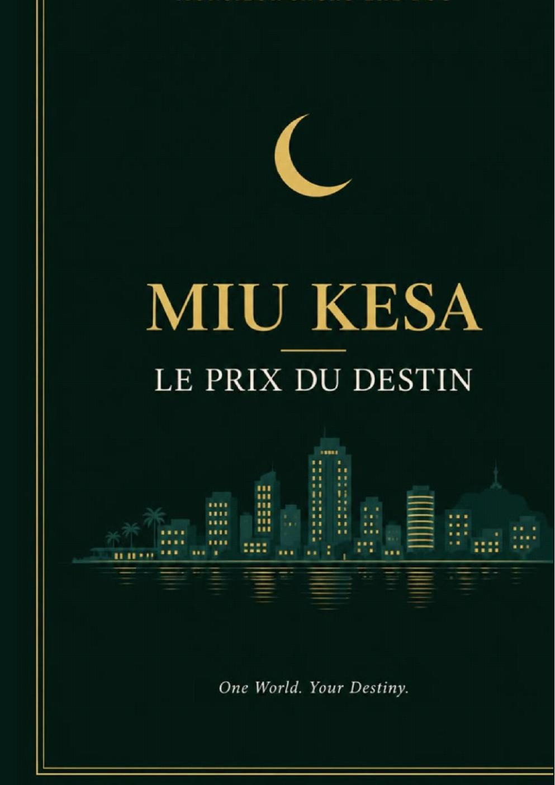

MIU KESA
Le Prix du Destin
Un roman de MONSIEUR SACKO LHE DUC
14 chapitres · Lecture hors ligne
Votre lecture commence ici
LE ROMAN
MES FAVORIS
À PROPOS
MONSIEUR SACKO LHE DUC
Auteur de MIU KESA — LE PRIX DU DESTIN.
Une histoire de famille, d'amour, de pouvoir, de trahison et de vérité.
One World. Your Destiny.